Distributions
Random Variables
A random variable –in statistical terms– is a variable whose value depends on random chance. Each random variable has one or more parameters governing the probability of different outcomes. There are two types of random variables: discrete random variables which have a limited number of possible discrete outcomes and continuous random variables which have a (theoretically) unlimited number of possible outcomes.
Challenge
Think of two examples of a discrete random variables and two examples of a continuous random variables for your area of scientific interest. What is the sample space for the random variable?
Probability Distributions
If we plot the values from a random variable using a histogram, we call the result a probability distribution. The various distributions form the basis of parametric statistics. There are four main R functions associated with each probability distribution. In of the below, you will replace \(dist\) with the abbreviation for that distribution (norm, binom, etc.)
- rdist - random values drawn from the \(dist\) function
- ddist - probability density of \(dist\) at a particular point
- pdist - cumulative (tail) probability of the \(dist\) function
- qdist - quantiles of \(dist\) (quantiles are the converse of cumulative probability)
Discrete Distributions
Binomial Distribution
A Bernouili trial describes an event that has exactly two possible outcomes: success and failure. Success occurs with a given probability, for example \(p = 0.2\). We know how likely a trial is to result in success, but any given trial may result in either success or failure, and this cannot be predicted for a single trial (the outcome is stochastic).
The result of a series of \(n\) Bernoulili trials with \(X\) successful outcomes results in a binomial random variable.
The expected value of the binomial distribution is \(E(x) = np\)
Binomial random variables can be simulated in R using the rbinom() function.
# 10 observations, 1 trial
rbinom(n = 10, size=1, prob = 0.5)## [1] 0 0 1 1 1 0 1 1 0 0# 1 observation, 10 trials
rbinom(n = 1, size=10, prob = 0.5)## [1] 2# 10 observations, 10 trials
rbinom(n = 10, size=10, prob = 0.5)## [1] 2 5 4 2 4 6 5 3 6 6We can use the dbinom() function to get a sense of the shape of the binomial distribution.
library(ggplot2)
qplot(x=1:25, y=dbinom(1:25, 25, prob = 0.5), geom="line", main="binomial density prob=0.5")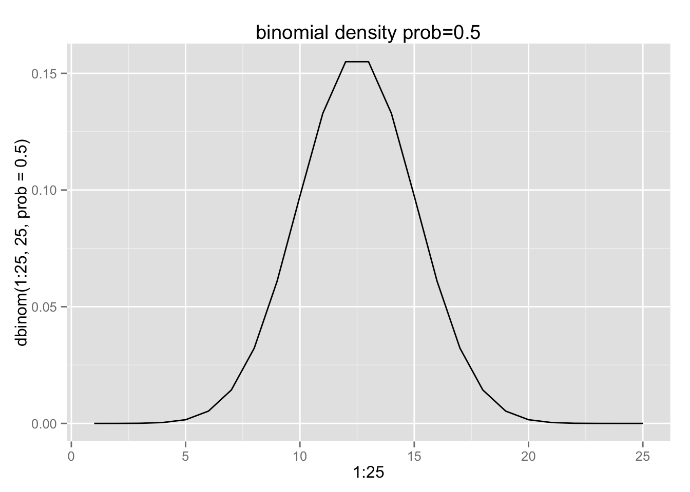
qplot(x=1:25, y=dbinom(1:25, 25, prob = 0.2), geom="line", main="binomial density prob=0.2")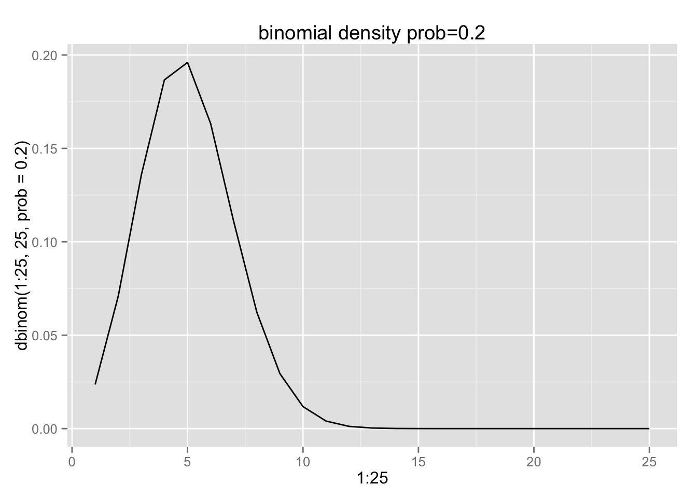
Notice: the right tail of this distribution is not at zero, but is asymptotically approaching zero.
dbinom(25, 25, prob = 0.2)## [1] 3.355443e-18Simulation
We can also simulating data from a binomial distribution. The graph shows that the most common outcome of 5000 trials of a binomial function with a probability of 0.5 is to have approximately 2500 successful outcomes. It is significantly less likely to get many more or less than 2500 successes. Note: the binomial distribution approximates the normal distribution at very large values of \(n\).
qplot(rbinom(n = 5000, size=5000, prob = 0.5), main="binomial distribution p = 0.5")## stat_bin: binwidth defaulted to range/30. Use 'binwidth = x' to adjust this.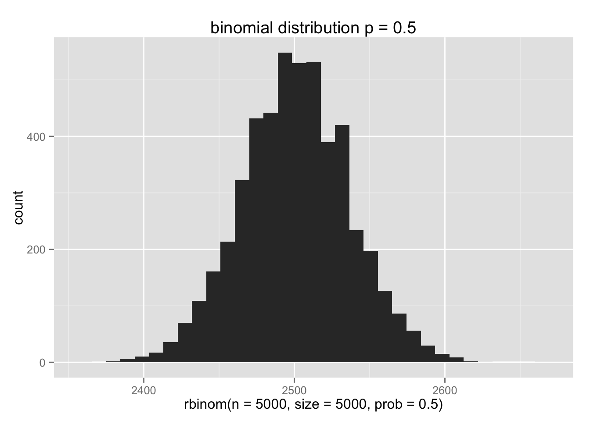
Poisson Distribution
Is similar to the binomial distribution, but describes rare events, when the number of trials \(n\) is unknown. Requires a single rate parameter \(\lambda\). It is commonly pops up when examining the number of events occuring through time (e.g., the number of pieces of mail recieved per day, or the number of speciation events occuring per millenium). The expected value and variance for the Poisson distribution are both equal to lambda
rpois(10, lambda = 0.2)## [1] 0 2 0 1 1 0 1 0 0 0qplot(x=0:5, y=dpois(0:5, lambda = 0.2), main="Poisson distribution with lambda = 0.2", geom="line")
At large values of lambda, the Poisson distribution looks very much like a normal distribution with mean \(\lambda\).
qplot(x=1:60, y=dpois(1:60, lambda = 30), main="Poisson distribution with lambda = 30", geom="line")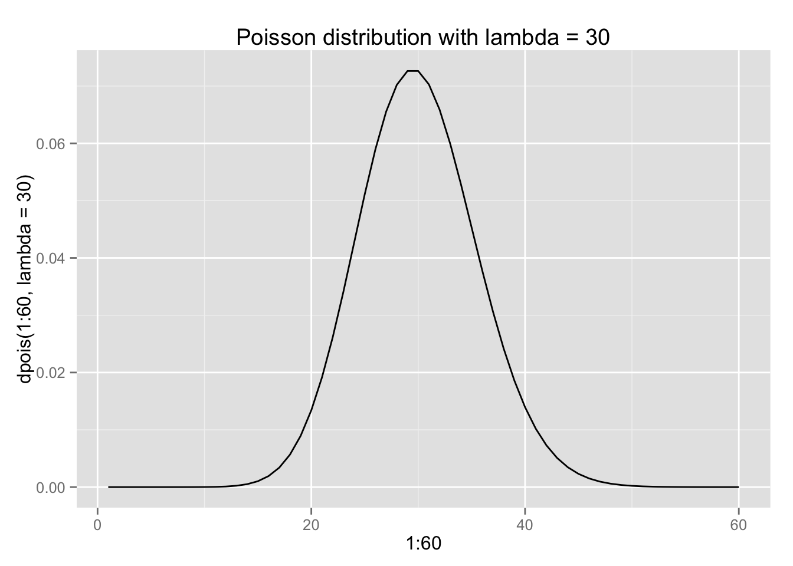
Continuous Distributions
Uniform Distribution
The uniform distribution represents a function in which the probability density is equal for each sub-interval across the a given range. This results in a flat frequency distribution. The expected value over the range \(a\) to \(b\) is \((a + b)/2\). An example might be the distribution of trees on a savannah landscape, which are competing with one another for nutrients and light.
runif(10, min = 1, max = 10)## [1] 4.534789 6.044339 8.682121 5.459370 5.991888 6.624970 6.536601
## [8] 9.131194 9.123029 6.700767qplot(runif(10000), min=1, max=10, main="uniform distribution from 1 to 10")## stat_bin: binwidth defaulted to range/30. Use 'binwidth = x' to adjust this.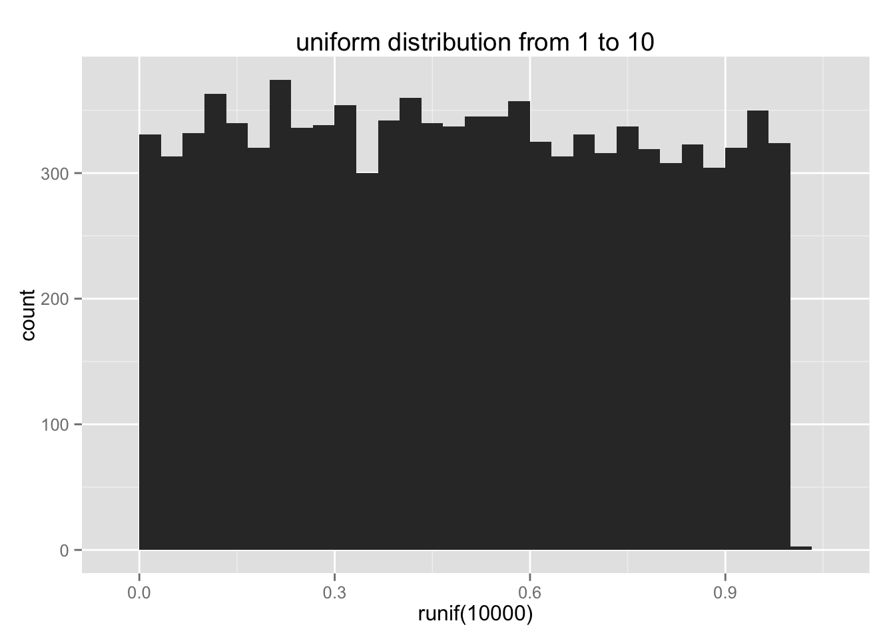
Normal Distribution
The normal distribution (also known as the Gaussian distribution) is the familiar bell-curve shaped distribution that is symmetrical around the mean, with diminishing tails as you move away from the mean. Many phenomena in nature are distributed as a normal distribution, especially continuous measurement values. The normal distribution has two parameters, the mean (\(\mu\)) and the standard deviation (\(\sigma\)).
rnorm(10, mean=0, sd=1)## [1] 1.07380533 -0.80876949 0.04223363 0.19413731 0.56832683
## [6] -1.05413673 1.29415833 -0.24584865 0.56208715 -0.38659431qplot(rnorm(10000), mean=0, sd=1, main="Standard normal distribution ")## stat_bin: binwidth defaulted to range/30. Use 'binwidth = x' to adjust this.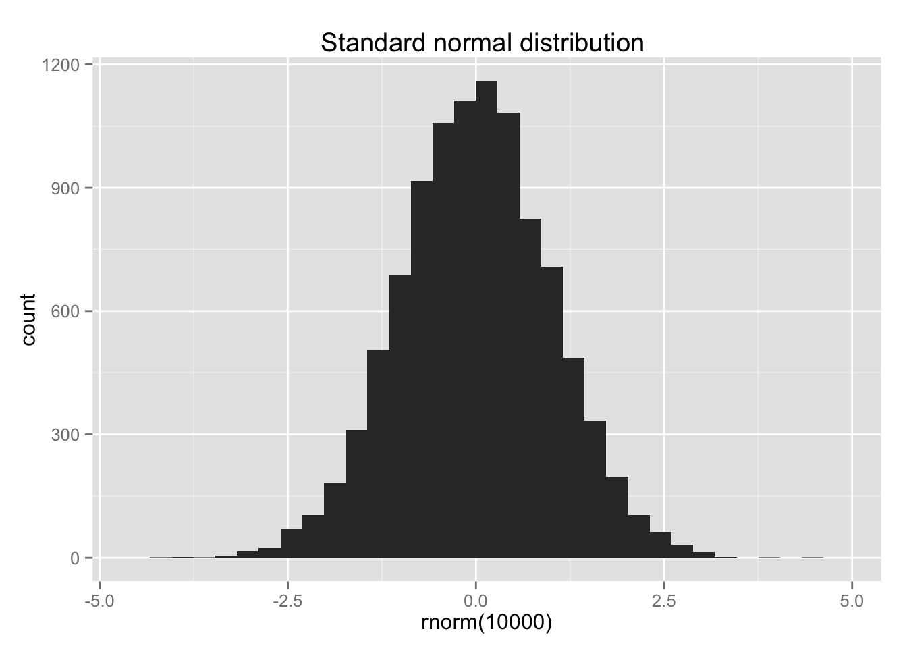
Log-normal Distribution
The log-normal distribution resembles a normal distribution when it is logged.
rlnorm(10, meanlog = 0, sdlog = 1)## [1] 1.2843636 0.7968596 4.4519489 4.1788336 1.7054733 1.0256739 0.7452309
## [8] 0.6425638 3.0331026 0.2706177lnorm <- rlnorm(1000, meanlog = 0, sdlog = 1)
qplot(lnorm, main="lognormal distribution")## stat_bin: binwidth defaulted to range/30. Use 'binwidth = x' to adjust this.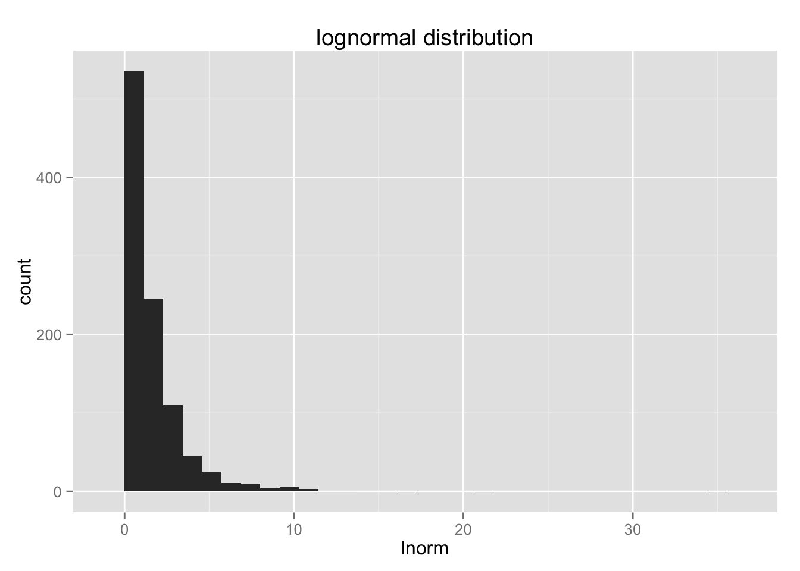
qplot(log(lnorm), main="logged lognormal distribution")## stat_bin: binwidth defaulted to range/30. Use 'binwidth = x' to adjust this.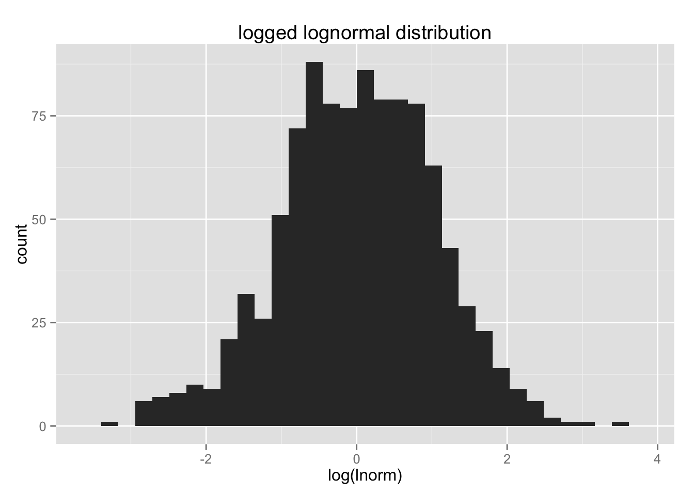
Exponential Distribution
The exponential distribution is the continuous version of the Poisson distribution. It is goverend by a single rate parameter.
rexp(10, rate=2)## [1] 0.188932511 0.448628372 0.380828798 0.009292117 0.047564496
## [6] 0.614757543 0.113406790 0.669341278 0.321130701 0.932205395exponential <- rexp(1000, rate=2)
qplot(exponential, main="Shape of Exponential distribution using random simulated data")## stat_bin: binwidth defaulted to range/30. Use 'binwidth = x' to adjust this.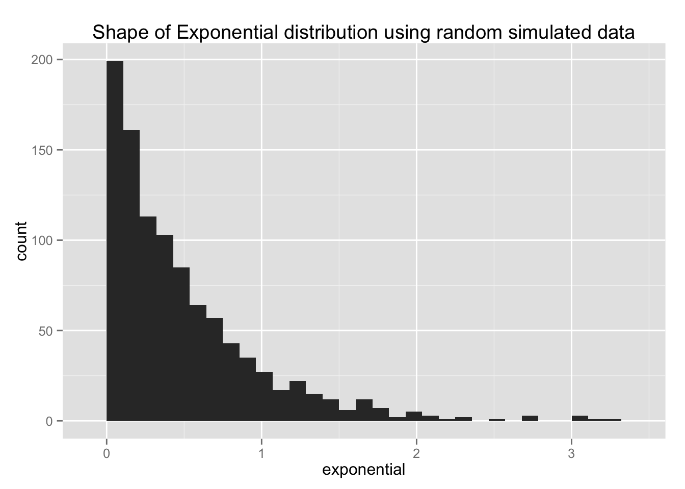
Alternatively, we can compute the theoretical density values for a sequence of numbers from 0 to 5.
qplot(seq(0,5,0.1), dexp(x = seq(0,5,0.1), rate=2), geom="line", main="Theoretical shape of exponential dist with rate = 2")
Tail (cumulative) probability
It is often very useful to know how much probability density is under a distribution up to a certain point. Consider a normal distribution with a mean of 10 and a standard deviation of 1.5.
We can calculate the cumulative probability up to a value of 5 like this:
pnorm(q = 5, mean = 10, sd = 1.5)## [1] 0.0004290603This tells us that 4.290603310^{-4} is the proportion of values that are less than or equal to 5 in this probability distribution. If we were dealing with real data, we would be forced to say that an observation of 5 is very uncommon in this distribution, and the cumulative probability gives us an estimate of just how unlikely
This is fundamental, as this is exactly what a p value represents, but more on that next week.
Challenge: What is the cumulative probability at a value of 10 in the same normal distribution?
Quantiles
Quantiles are like cumulative probability turned on its head. Cumulative probabilty asks “how much probability density occurs at less than or equal to a value \(x\)”. A quantile is the opposite: “what is the value of \(x\) at which a given proportion of the probability density occurs?”
The most familiar examples are percentiles. Take a normal distribution of exam scores.
set.seed(1237)
grades <- rnorm(1000, mean=75, sd=10)
qplot(grades)## stat_bin: binwidth defaulted to range/30. Use 'binwidth = x' to adjust this.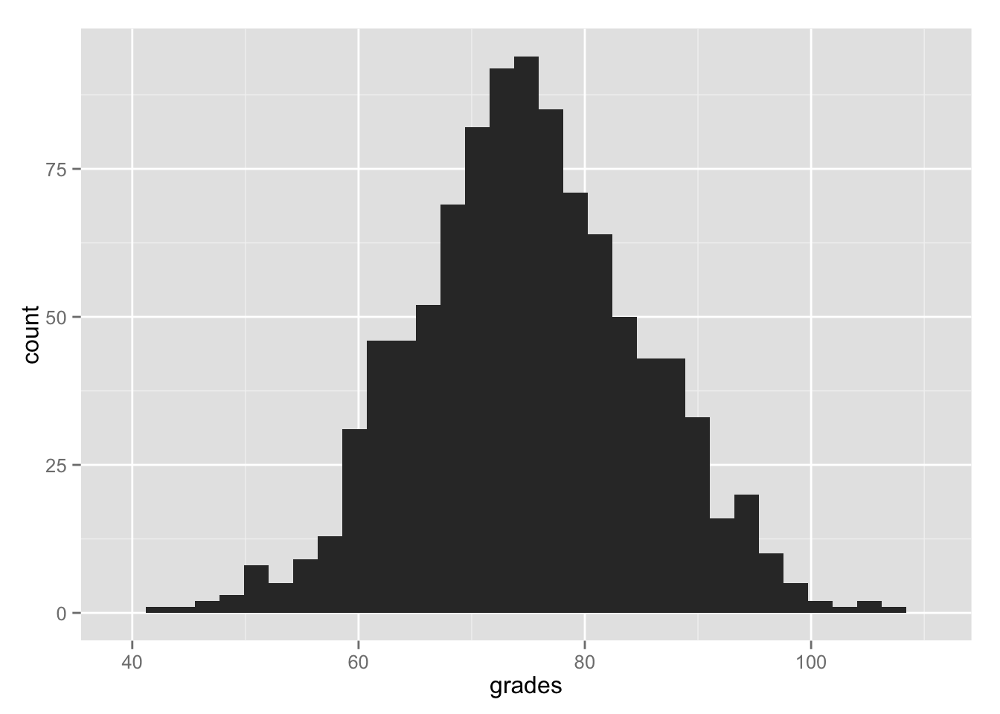
We might ask where the 90%th percentile is located. At this \(x\) value, 90% of observations are less than or equal to \(x\).
ninety_percentile <- qnorm(0.9, mean=75, sd = 10)
qplot(grades, main="grades distribution with 90th percentile indicated") +
geom_vline(xintercept=ninety_percentile, color="red")## stat_bin: binwidth defaulted to range/30. Use 'binwidth = x' to adjust this.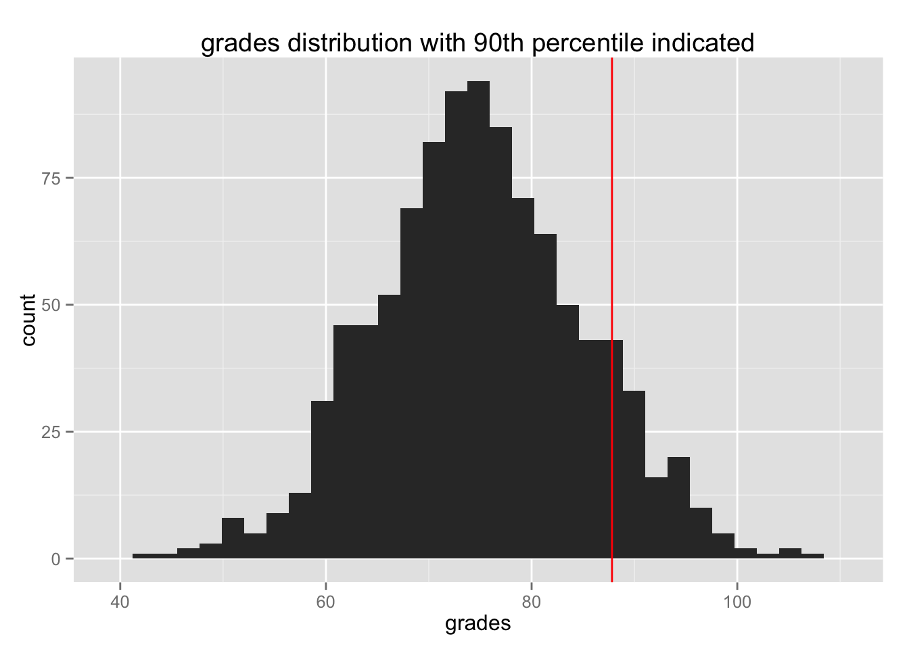
We can check to see if this matches by counting how many observations are less than or equal to the ninety_percentile calculted from theqnorm() function.
sum(grades <= ninety_percentile) / length(grades)## [1] 0.893Why isn’t this number exactly 0.9?
Testing for normality
It is often very useful to test an empirical distribution of values to see how closely it approximates a normal distribution. There are two main ways to do this:
- Visually with a Q-Q plot
- Statistically with Shapiro-Wilk normality test
Q-Q plot
The Q-Q plot compares your empirical cumulative distribution to the theoretical normal cumulative distribution. If the data are normal, then the Q-Q plot will look like a straight line.
qqnorm(rnorm(1000))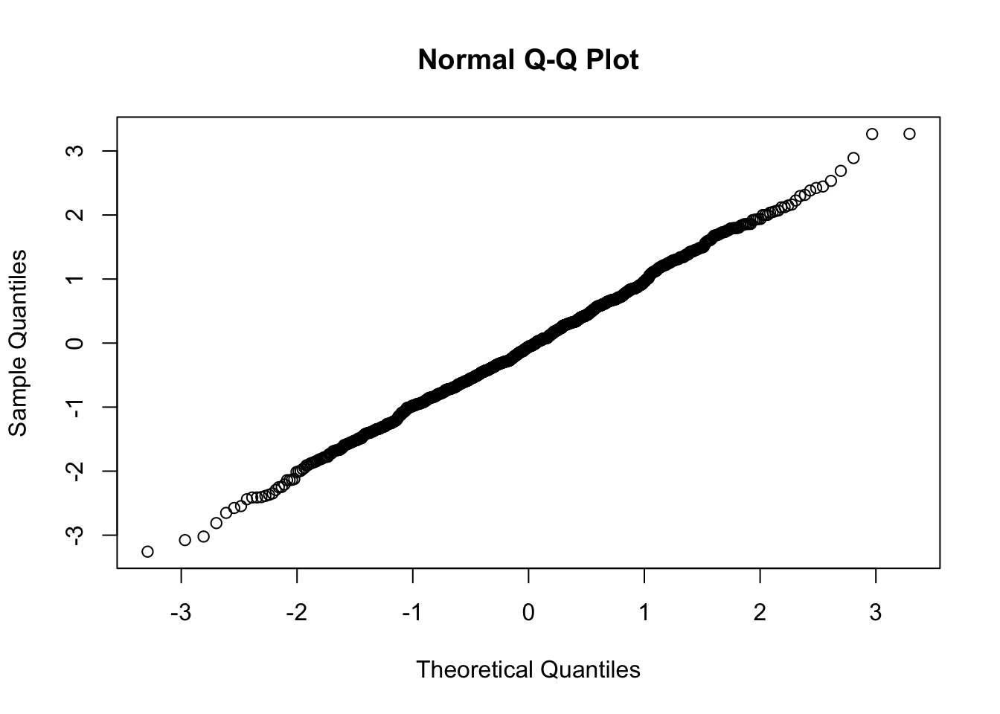
If your data are not normally distributed, then the Q-Q plot will look curved, or banana shaped. It will take some practice to figure out how far a Q-Q plot can deviate from a straight line without creating too many problems.
qqnorm(rnorm(1000)^2)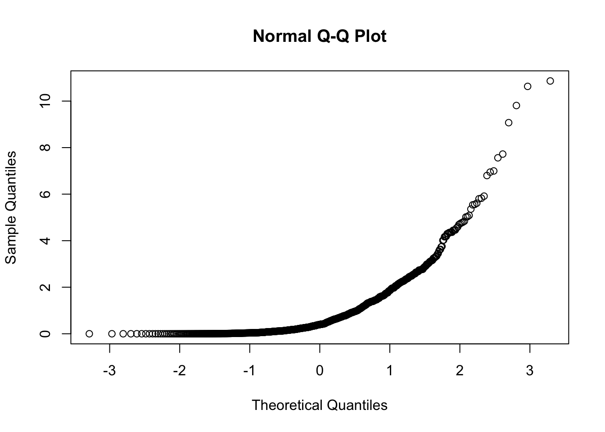
qqnorm(rnorm(1000)^3)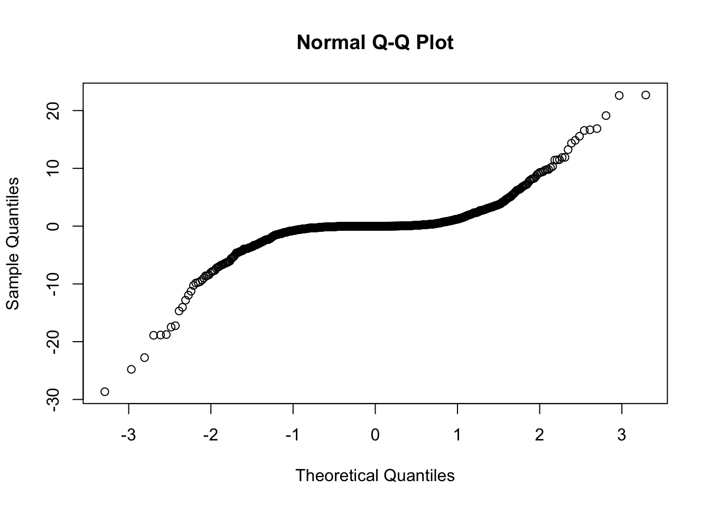
Shapiro-Wilks test for normality
The Shapiro-Wilk Test yields a test statistic W, by finding the largest deviation from the expected line in a qqplot. This is a powerful test for normality, but does not work well when there are many ties in the data.
shapiro.test(rnorm(1000))##
## Shapiro-Wilk normality test
##
## data: rnorm(1000)
## W = 0.997, p-value = 0.0608shapiro.test(rnorm(1000)^2)##
## Shapiro-Wilk normality test
##
## data: rnorm(1000)^2
## W = 0.7051, p-value < 2.2e-16